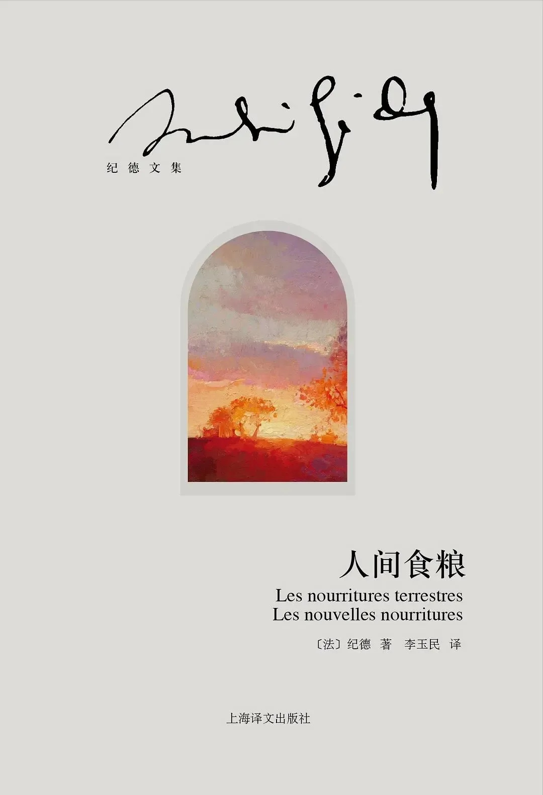

前言
这是一本奇特的书，它可以被看作任何一种文体，却又与什么体裁都没有干系。我真的很难用系统的语言聊这本书，所以我打算想到什么写些什么，文本可能比较混乱，凑合看一看就好了。
“但愿本书教你关注你自身超过这本书，进而关注一切事物超过你自身。” 《人间食粮》
正文
安德烈•纪德，在我眼里他是一位伟大的魔术师，他把自己的一生变成是文学观念的一次尝试，他的每部作品都像是一个迷宫，而《人间食粮》正是其中之一，可以将这本书看作是纪德的自白，他把自己的幸福观，附着在每时每刻的日常生活和个人思考之中，进而注入文字之中。但当他的迷宫建造完毕，他就会脱身而去，继续他永无止境的人生魔术。因此，如果在《人间食粮》中获得了某种启示，那么就不应该沉湎于其中，而是继续前进。所以“将这本书读完后，请睁开双眼，抛掉这本书，到街上去吧”
纪德所处的时代，上帝已死。人们抬头仰望上苍，发现那个神性的世界是不存在的，任何灵魂都没有救赎可言；于是，他们把目光从天空移向地面，投入生活本身。可以用人的目光审视世界，从中发现新意，重拾对生活和生命的热爱，而纪德，这个以文字为翅膀的人，用文字和思想，描绘热爱和激情，讴歌尘世中的一切，与万物一体，与自然相和谐。
无论你对自己的文学欣赏能力存在多大的疑问，对名著存在多少敬畏，对纪德所谓的那些头衔都不用感到畏惧，直接翻开《人间食粮》吧。也许飘零的文字，会让人觉得冗长和琐碎，但我相信，如果纪德曾经从如此获取无数丰富的感触和体验，那么你也一样能够从这本书里获得类似的收获，因为我们也走在这样的世界上，作品中炽热的情感是始终能感受到的。纪德说：关键是你的目光，而不是你的所见。
生命的终极意义就是生命本身。于生命而言，即便是最不起眼的瞬间，也比虚无强大。生命本身就是一个时间的过程，人生的虚无与实在是时刻相辅相成的，所以虚无也是无处不在的。既然留不住一切，不如拥抱顷刻的瞬间，生命的真相就寓于顷刻间的爱里，在爱的瞬间才能体味到恬静的永恒。《人间食粮》里，纪德就是这样做的，整本书没有时间和空间的概念，作者在世界漂流，从一个地方到另一个地方，从一个清晨到另外一个夜晚，留下了或长或短的文字。它们在逻辑上并没有很强的关联，更像是一团心灵飘荡在世界的各个角落，记载下它的观察和感悟。
放弃思维和分辨，随着纪德一起完成这次奇异的精神之旅。他如何向你展示这个世界，如何向你展示他的心灵，那么你就直视它们，用心灵而非头脑去感受。然后，你会爱上这个世界，爱上你脚下的大地。
但是，《人间食粮》永远不应该是一本心灵鸡汤，更不应该成为生活的一切，它不应该是一个信条。就像书中所说：“扔掉我这本书吧”，永远不要轻信每任何一个观点，你也不应该将空泛的遣词伪装起来的观点作为自己的人生信条，所以扔掉千千万万本书吧。在对生命的热爱中，在热爱的消耗中，我们唯一能确信的就是当下的生活，切莫辜负每一个瞬间，构筑起自己的人生态度。我想这应该是纪德最想告诉读者的。当我们意识到生活与幸福之时，应该会由衷感叹一句：
能诞生在生活里，真是太好了。
2023/2/19
Yuay
@Yuay